Internal stresses due to slip gradients
- 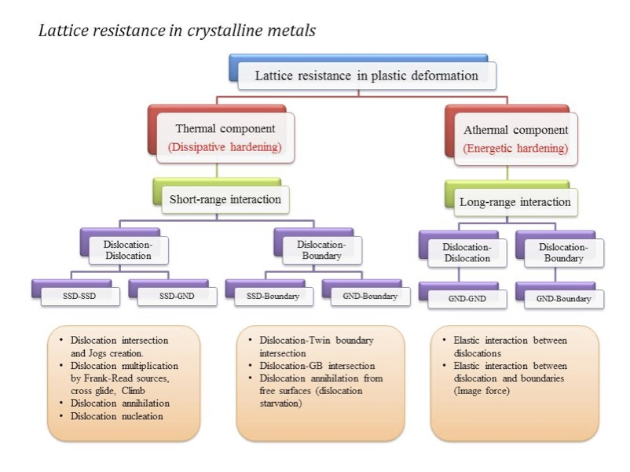
- 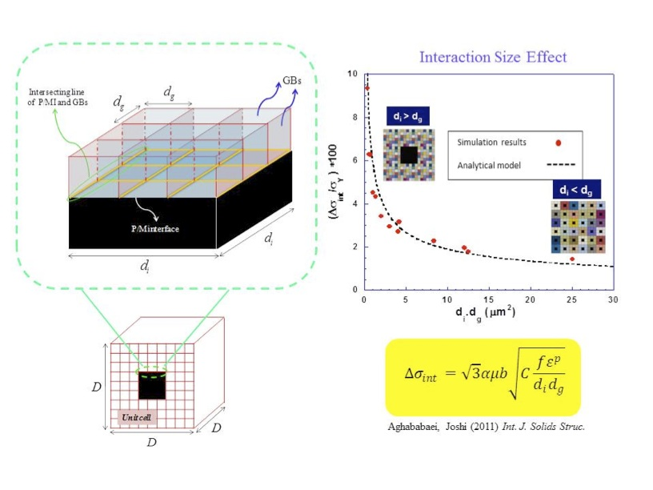
- 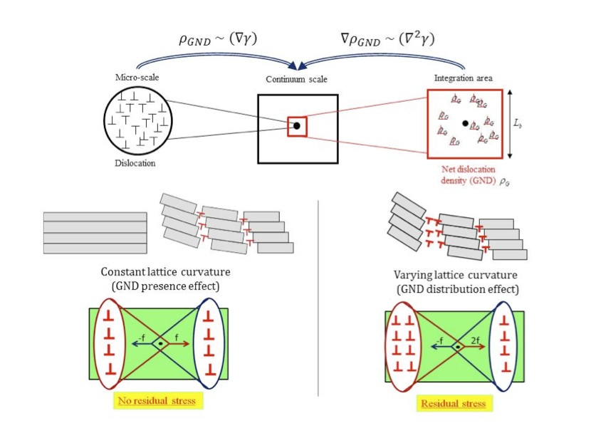
- 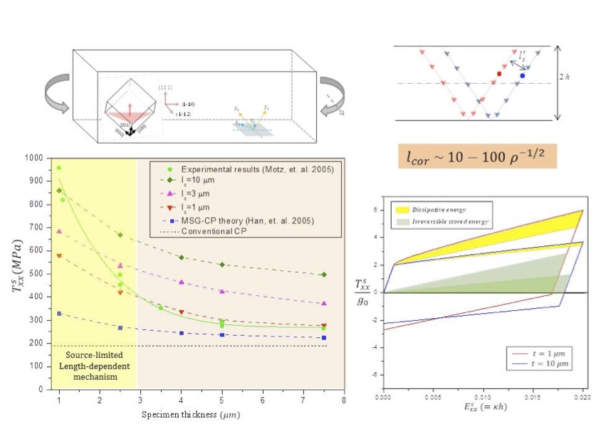
- 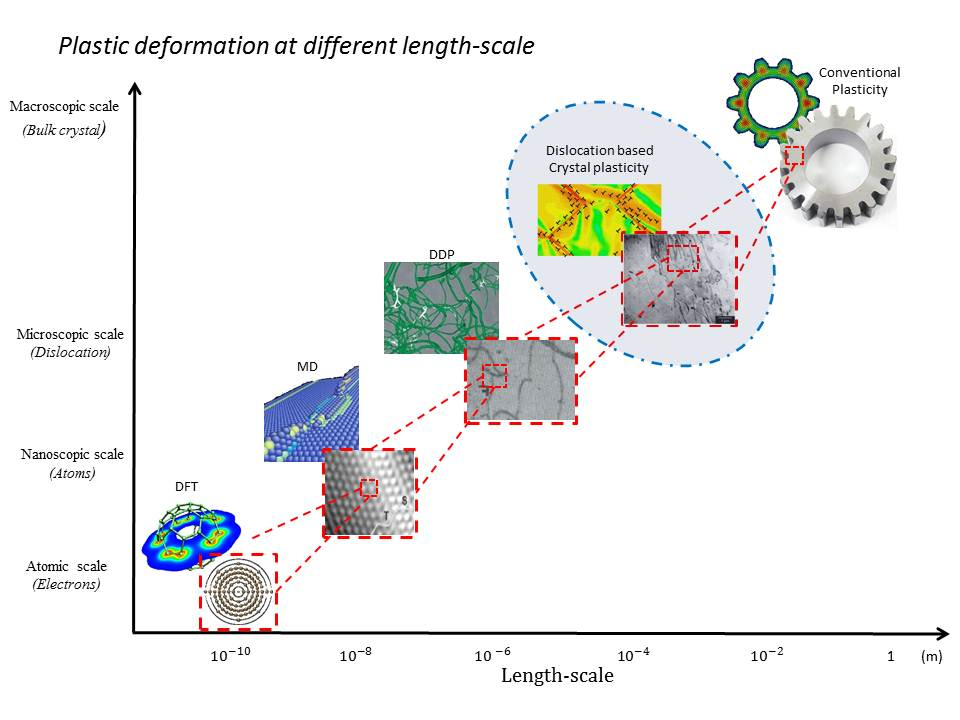
- 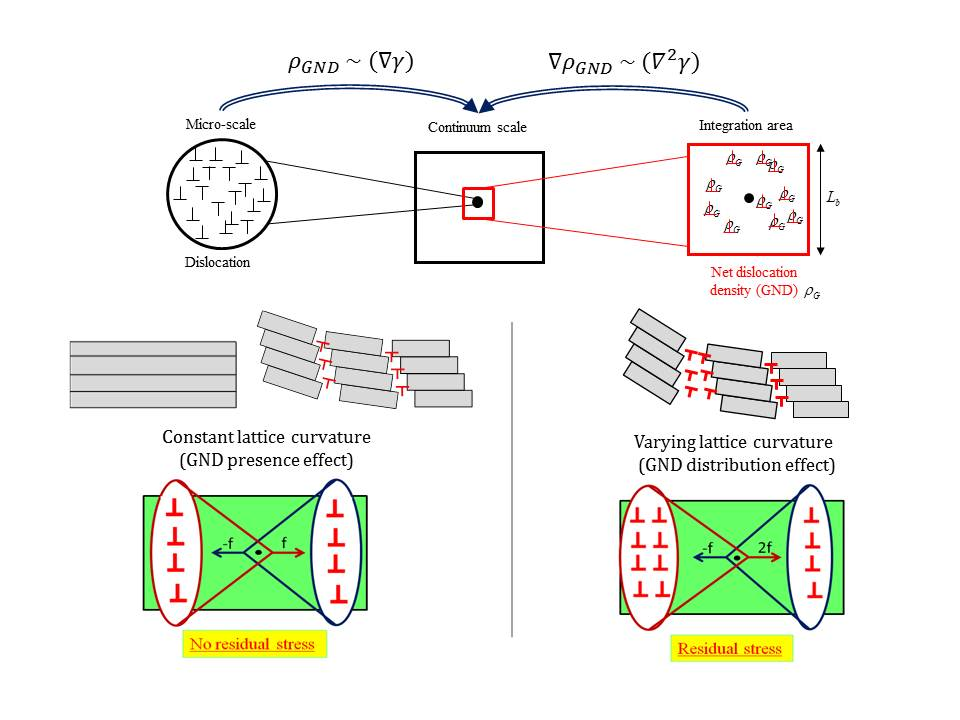
- 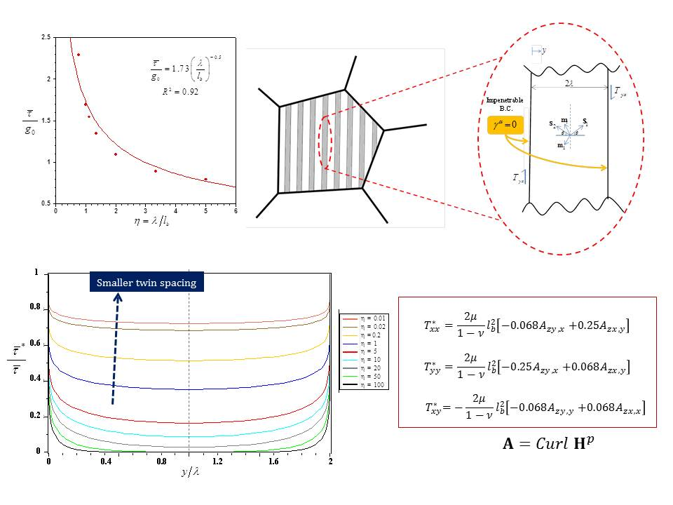
- 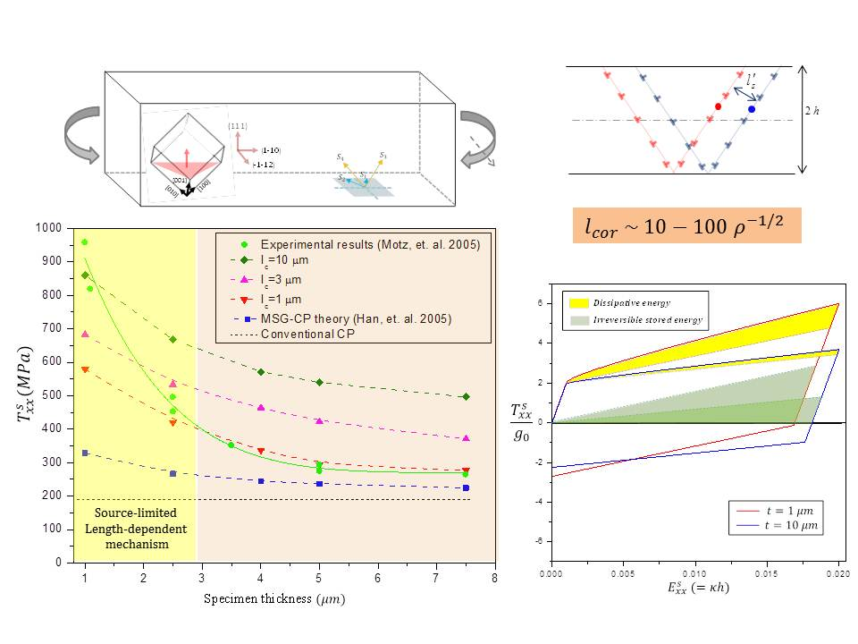
- 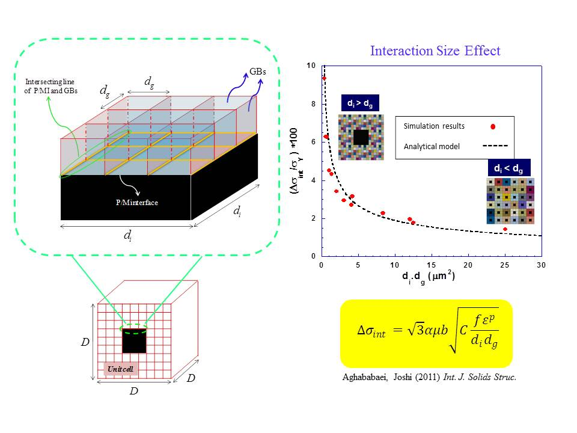
Our focus is on continuum modeling of the crystal lattice resistance arises from short range (thermal components) and long range (Athermal component) interaction of geometrically necessary dislocation (GNDs) in hierarchical nanostructured/miniaturized crystalline materials.
-
The length-dependent behaviors of the metal matrix composites (MMCs) comprising nano/ microcrystalline matrices and reinforcements are investigated using mechanism based crystal plasticity theory. Systematic computational simulations on bare polycrystalline and MMC architectures are performed in order to isolate the contributions due to grain size, inclusion size and the interaction thereof. Based on these results, an analytical model developed for the interaction hardening exhibits a Hall-Petch type dependence on these microstructural sizes that can be incorporated into homogenized approaches.
-
A length dependent continuum crystal plasticity theory is developed accounting for internal residual stresses that arise from two sources: (1) GND-GND elastic long range interaction (LRI) arising from the finite/non-homogeneous distribution of the GND density field and (2) the LRI between the GND density and free surfaces appear as image fields. Using some numerical examples, it has been shown that the internal stresses affect the overall strengthening and hardening under monotonic loading, which is mediated by the severity of initial imperfections which are common in miniaturized specimens in the form of tapered surfaces, fillets, fabrication induced damage, and so on. Under cyclic loading the asymmetry in the tensile and compressive strengths due to this internal stress is also strongly influenced by the degree of imperfection. A comparison of developed model with experimental results suggests that the length-scale for internal stresses, described as a correlation length-scale, should increase with decreasing specimen thickness. This observation is rationalized by associating the internal length-scale with the average slip-plane spacing, which may increase with decreasing specimen size due to paucity of dislocation sources.
Evolution of nt-microstructures
// (Nav) Nanotwinned metals
- 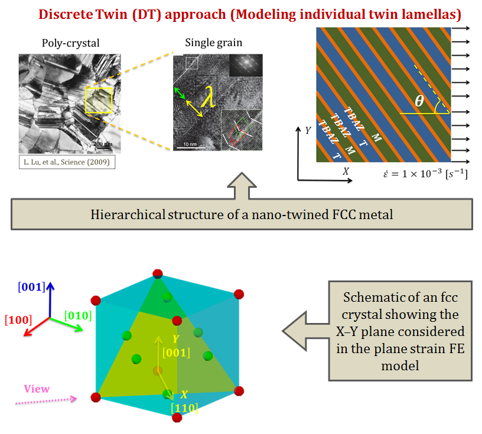
- 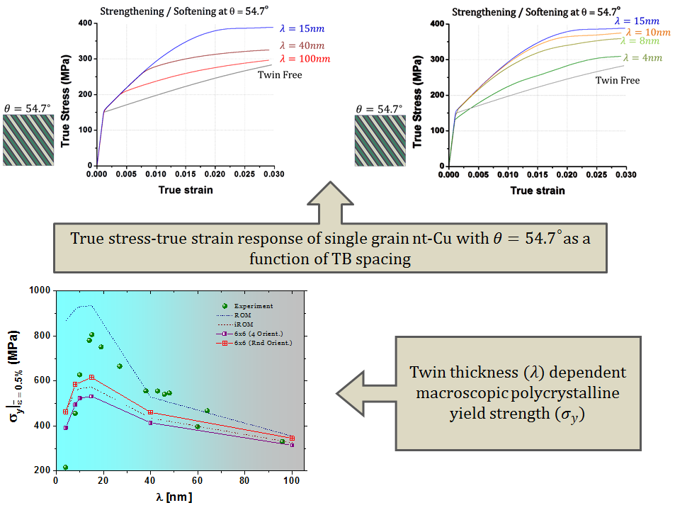
The Achilles heel of nanostructured metals has been the loss of ductility despite being able to achieve significant strengthening over their conventional coarse-grained counterparts. Various strategies have been proposed to mitigate this problem, and an attractive recourse is to engineer hierarchical micro-architectures that assist in strengthening by providing barriers to dislocation motion while concurrently retaining or introducing stabilizing mechanisms such as enhanced rate-sensitivity and strain-hardening. Hierarchical nanotwinned (nt) microstructures simultaneously exhibit impressive strengthening, hardening, and ductility with decreasing twin thickness (Lu and coworkers, Science (2004)) that is seldom observed in nano-grained microstructures obtained via grain refinement. Interestingly, these microstructures also exhibit a strengthening to softening transition at yield below a critical twin thickness (Lu and coworkers (2009)). Using experimental and molecular dynamics observations as the basis, we propose a length-scale dependent Discrete Twin Crystal Plasticity (DT-CP) framework for nt-metals. The novel feature of this work is that we retain the discreteness of twin lamellas, which provides unique avenues for investigating the mechanics of nt-microstructures.
The DT-CP approach allows probing local characteristics with higher resolution compared to some of the existing homogenized approaches. For example, plastic slip heterogeneities near twin boundaries are well-resolved, which are useful in addressing ductility and evolution of failure modes. Our current focus is on extending the DT-CP approach to modeling TB migration using mechanism-based kinetics. We have successfully integrated twin boundary migration kinetics into the finite element based crystal plasticity framework.
Slip and twinning in pure Mg and Mg-composites
// (Nav) Mechanics of HCP Metals
- 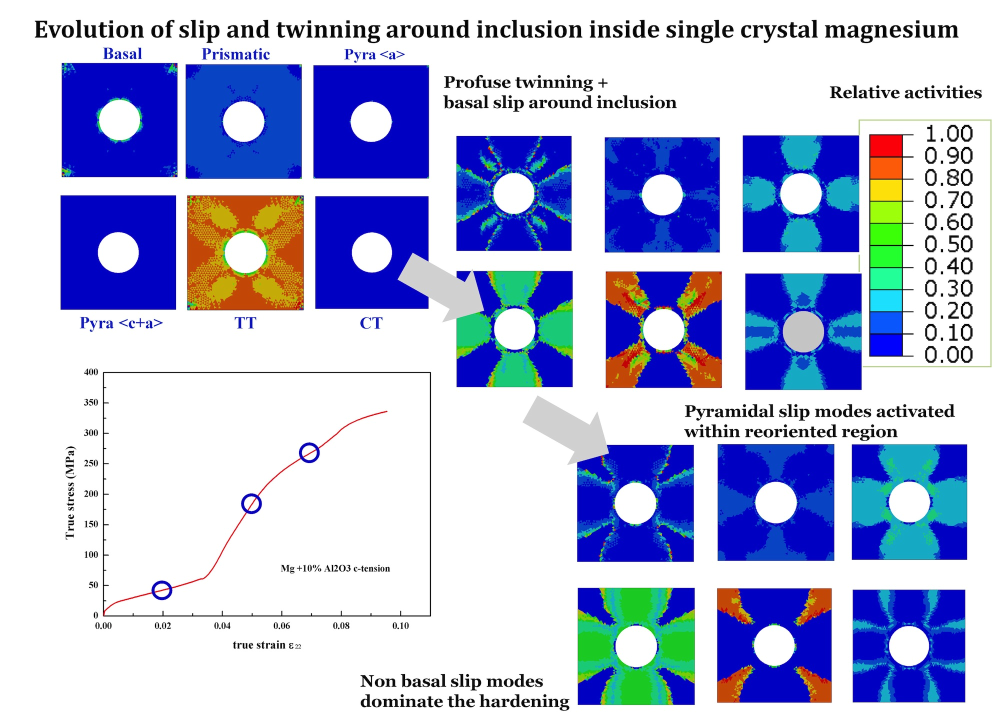
- 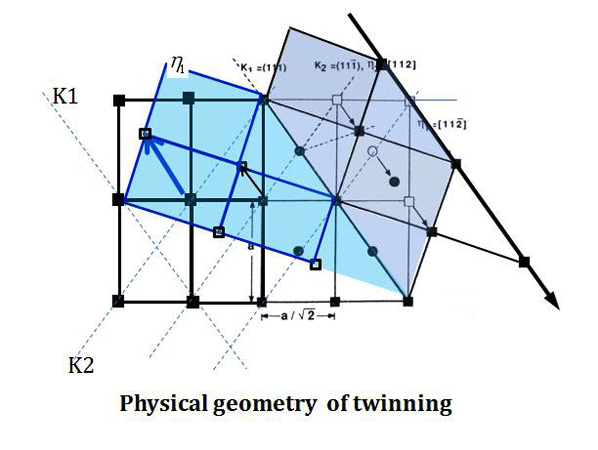
- 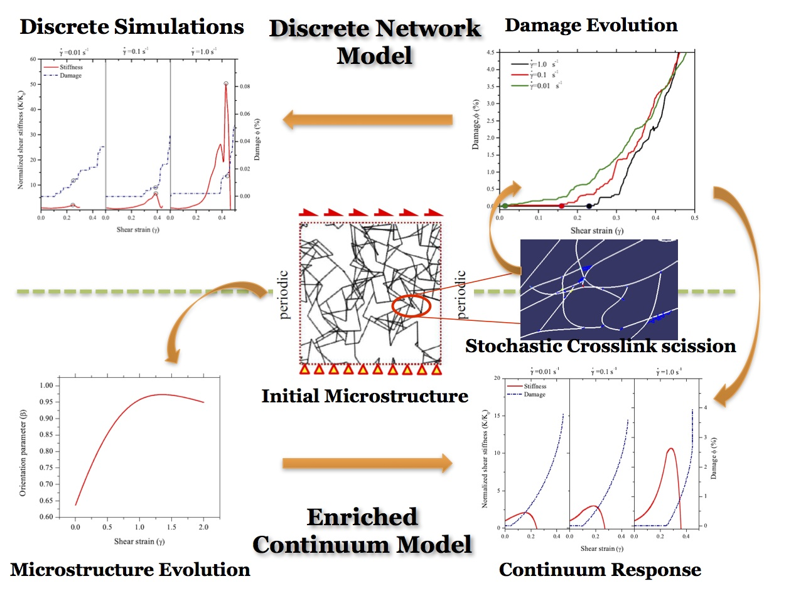
- 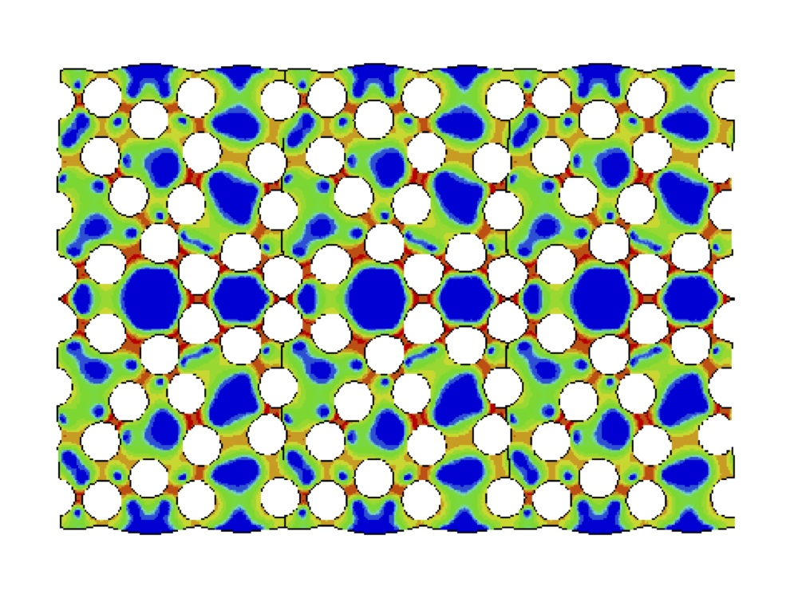
- 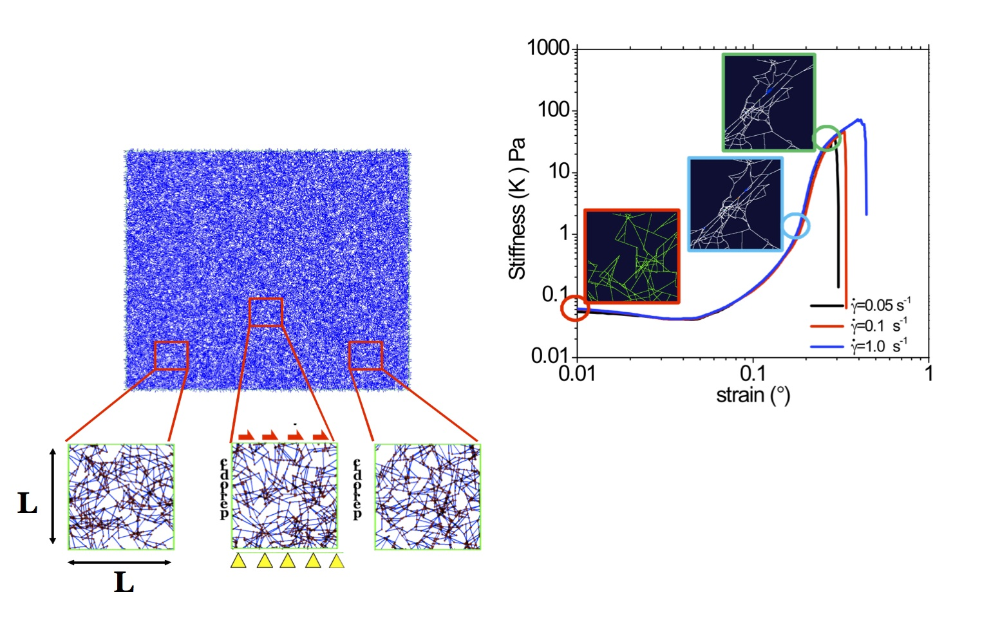
Magnesium (Mg) and its composites are potential candidates for structural applications ranging from energy-savvy automotive and aerospace sectors to biomedical components, due to its low mass density (~35% lighter than aluminum) and excellent biocompatibility. There has been a renewed emphasis toward developing novel micro-architectures with impressive specific strengths (strength/ density) using pure Mg or its alloys by inducing barriers to plastic deformation through a variety of techniques including grain size refinement, nano-reinforcements, or combinations thereof. A cleaner understanding of the inelastic deformation mechanisms in Mg is also vital to successful applications. However, modeling such intricate holistic responses is a challenging task because of the myriad interactions between the different deformation mechanisms that prevail in this hexagonal close-packed (HCP) crystal structure. In this project, we developed a Single Crystal Plasticity (SCP) model for pure Mg that attempts to address the following objectives:
- To provide improved phenomenological descriptions of slip and twin (compression as well as tension twins) v.f. evolution including the slip-slip, twin-slip and twin-twin interactions while retaining the basic structure of the conventional self- and latent-hardening laws.
- To rigorously characterize the material parameters corresponding to these improved descriptions by simulating a range of experiments and critically corroborating the orientation-dependent macroscopic and microscopic responses through single crystal simulations.
- To probe the effect of the twinning-induced lattice reorientation on the strain hardening behavior vis-à-vis the twin v.f. evolution and the effect of initial defect population (e.g. initial twin v.f.) on the macroscopic response for twin-friendly orientations.
- To use the constitutive parameters of single crystal Mg in predicting the macroscopic responses of polycrystalline pure Mg with different textures.
- To apply the SCP model in predicting the orientation-dependent micro-macro characteristics of pure Mg single crystals with embedded inclusions in connection with its applicability to Mg composites.
The bottom-up approach from single to polycrystalline simulations provides several exciting prospects. It provides a way to explicitly investigate effects of grain orientation, size and shape distribution effects. The approach could be further enhanced by accounting for grain boundary effects such as grain boundary sliding, probabilistic descriptions of the twin nucleation. Another important direction that interests us is that of systematically incorporating the effects of alloying elements on the slip and twin system characteristics of single crystals. Also, the temperature dependence of the slip and twin modes of single crystals would be a vital extension to render its utility in addressing formability and texture evolution. Our on-going effort aims at incorporating size-effects in pure Mg.
// (Navigation) Fiber-reinforced composites
Moisture-induced degradation of reinforced polymers
Polymers, natural or synthetic, are often subjected to residual stresses under varying hygroscopic conditions, due to the difference in the moisture expansion coefficients between the inclusion and the matrix. Moisture ingress may assist the degradation of composites used in, for example, wind energy or marine structures, dental composites and similar hostile conditions. In this work, we investigate the response of fiber-reinforced polymers under transient hygro-mechanical conditions at two microstructural length-scales. In this work, we demonstrate the role that fiber distribution plays in the evolution of overall damage debonding at the matrix-inclusion interfaces due to moisture-induced stresses, using finite element based micromechanics. Motivated by experimental observations, we incorporate the interface behavior that degrades with the local moisture concentration. The moisture and mechanical transients provide synergistic conditions for the evolution of debonding, under both the sequential and simultaneous loading. The results show that fiber clustering strongly affects the moisture diffusion characteristics of the RVEs that in turn hurt the overall load carrying capacity of a composite due to aggravated damage. The strong dependence of the moisture-induced damage evolution on the fiber arrangement suggests that one should not resort to using simplistic unit cell models that assume regular fiber arrangements.
Stochastic, rate-dependent elasticity and failure of soft, fibrous networks
// (Navitaion) Filamenteous polymeric networks
Filamentous networks are subscale motifs ubiquitous in biopolymers and synthetic polymers. They provide structural stiffness that can be modulated actively (e.g. in actin networks) or passively (e.g. in synthetic polymers) by mechanical stimuli. In this work, we develop a finite element based approach to model such discrete filament networks. The approach is motivated by the recent progress in biopolymers that exhibit rate-dependent mechanical characteristics including elastic and inelastic behaviors, ascribed to the role of crosslinks. The model comprises discrete filaments representing actin filaments modeled by beam finite elements that are connected at intersections via nonlinear springs representing the actin binding proteins (crosslinks). The crosslink dissociation due to exerted force is modeled via Kinetic Monte Carlo (KMC) procedure. The resulting macroscopic response is highly nonlinear and rate-dependent. The stiffness characteristics depend on the initial topology for a fixed cross-link density and evolve with deformation exhibiting strong stiffening (filament stretching) followed by rapid degradation (crosslink scission). We compare the rate-dependent behavior of these networks with experiments and discuss the variability arising from the stochastic effects. Although the model is motivated by the mechanics of biopolymeric materials, the strategy may be adopted for a variety of systems that exhibit similar architectures at different length-scales.
Funding Agencies